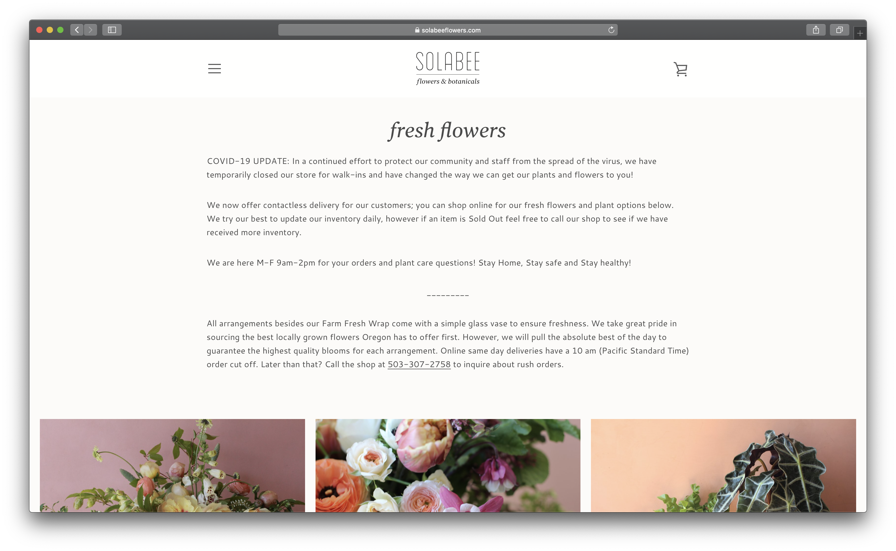

Final project proposal
Introduction
Midori
Midori is a local plant shop with the primary focus of bringing joy to its customers. All pots and artwork is locally sourced from our Porland artists.
Target audience
Target audience is plant lovers and people trying to add some green into their home. Millennials and Gen Z are the primary groups purchasing from us.
Our goal is to make people happy. We want to bring joy to our customers, friends, and families with our aesthetic plants and locally made pots and accessories.
Comparative analysis
Staghorn Mercantile
https://staghornmercantile.com/

Solabee
https://www.solabeeflowers.com/

Gurtons
https://www.gurtons.com/shop/2

Website content
Home
Midori, meaning green in Japanese, is a local plant shop located in Portland, Oregon. We opened Midori to give everyone the opportunity to fill their rooms with joy. At Midori, our primary goal is to make people happy. We offer a wide variety of houseplants, outdoor plants, as well as pots, jewelry and cards all sourced from our local artists.
[interior of plant shop]
Shop
We are excited to bring our customers beautiful greenery. Whether it be in shop or delivered to your doorstep, Midori is here to bring you the best quality plants, pots, and art.
All
[hanging plants]
Local Artist Spotlight
We want to support our local artists the best we can. All of our pots are unique and made by various Portland artists. Learn more about the artists behind your ceramic pieces and prints
Jessica Pluhar
[image of artist]
Jessica Pluhar of Of Hands Studio is a local ceramic artist and educator at Southridge High School. She specializes in functional and contemporary porcelain tablewear and creates her work in large custom batches.
Shop more of her collection at: http://www.ofhandstudios.com/shop
Where We Are
Midori is located off of 23rd street in Portland, Oregon. Our shop contains a variety of unique and aesthetic plants and accessories.
Open 10-5pm seven days a week
Street parking available
[exterior of shop location]
Contact
We love hearing from our customers. If you have any questions about plant care, products, or work, please fill out our contact form and we will get back to you as soon as we can
[plant shop interior with team]